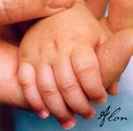

Home Artist links Label link

Alon - The Artist Manifesto Part 1
| Artist: | Alon |
| Title: | The Artist Manifesto Part 1 |
| Label: | Great Egg |
| Length(s): | 15 minutes |
| Year(s) of release: | 2005 |
| Month of review: | [10/2005] |
Line up
Alon - vocals, acoustic guitars, keyboards, m-tron, e-bow, programming
Kenny Jackson - drums
Jom Hamilton of Alo Brasil - percussion on 1
Shaun Patrick Callen - bass on 2
Chico Huff - bass on 1
Eileen Brady - vocals on 1
Denise NeJame - vocals on 2
Harrison McKay - korg ms2000 on 3
Scott Herzog - laughter on 2
Tracks
| 1) | Time Will Tell | 5.23
|
| 2) | Going Back | 5.20
|
| 3) | Art's End | 4.52
|
Summary
This is a short one, or maybe we should call it an appetizer.
Alon is the leader of this outfit and with the help of some friends
he recorded three songs.
The music
Time Will Tell opens with echoey vocals, and jangling acoustics. There
is something of a world music atmosphere here. Then the melodic
keyboards set in, bringing a rather melancholic feel. The vocals
are okay, a warm and intimate voice. I can only think of Peter Gabriel here,
for the style of the songs. This comes mainly through the relaxed
percussive character. The keyboards do lend a different impression, which is
good. The song stays very relaxed.
Going Back opens with plain drums. Again, a melodic song somewhere
between pop and rock. There is nothing overtly progressive about it that
I can hear, but that happens more often these days. The cymbals at the end
are rather typical.
Art's End is a synthy opener with also a bit of tension through the
repetitive patterns that resound in the back. Then we hear a lot of
effects, somebody destroying Art here? This is actually more electronic
music style material than a song. Nice though. The music seems to build
up to something epic, but then comes the end of the EP.
Conclusion
Well, with three songs there is not much to say. The music is melodic,
played and recorded well enough, and the vocalist is okay. Sometimes
I think of Peter Gabriel, sometimes the music can be quite EM like
(the final track). I guess art pop is the best description for this type
of music.
© Jurriaan Hage